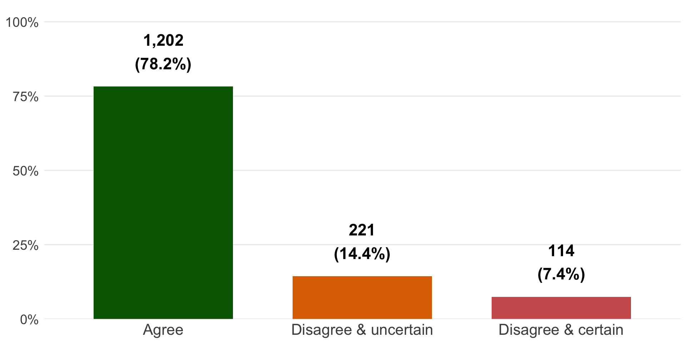

How to use LLMs to improve specialized ML tools
The case of criminal offense classification
The dilemma 😫
Are specialized ML tools and LLMs in competition, or can they work together?
Specialized tools:
- Better for specific tasks
- Straightforward to retrain
LLMs:
- Not validated, undeterministic
My use case 🔎
- Classify 1,537 offense descriptions for a racial disparities study in Pennsylvania
Goals 🎯
- Evaluation:
- Use LLM to discover biases and limitations of specialized tool through model disagreement and uncertainty
- Use specialized tool as baseline to evaluate LLM performance through distribution overlap (PA offenses)
- Extension: Use LLMs to get data not otherwise available
TOC results
Data TOC was “good” at classifying:
Mean confidence: 92%
TOC results (cont’d)
Data TOC was “bad” at classifying:
IDSI = Involuntary Deviate Sexual Intercourse
Mean confidence: 92%
LLM results
Data LLM was “good” at classifying:
Mean confidence: 77%
Model agreement

Public order disagreements
Use a comparison table to facilitate review:
Bias detection
I also discovered systematic biases:
Rape misclassified (“IDSI”)
- TOC classified 5 of 10 as violent
- LLM classified 10 of 10 as violent
Animal cruelty misclassified (“Animal”)
- TOC classified 2 of 11 as violent
- LLM classified 11 of 11 as violent
Hybrid framework
Not an binary decision
Initial tool: Develop specialized ML tool as a baseline
Auditing signal: Use LLMs to identify disagreements, uncertain cases, and systematic biases
Human review: Use model comparison to focus review and model retraining
Implications
The bias detection capability alone justifies LLM costs for criminal justice applications
- Audit your classifications
- Flag cases needing expert review
- Report biases and limitations
- In your own work
- To tool developers
Implications (cont’d)
For ML tool developers:
- Audit your tools using model disagreement methods
- Create bias elimination and retraining workflows
- Leave behind audit trails and write reports
- If you have money, post bias bounties